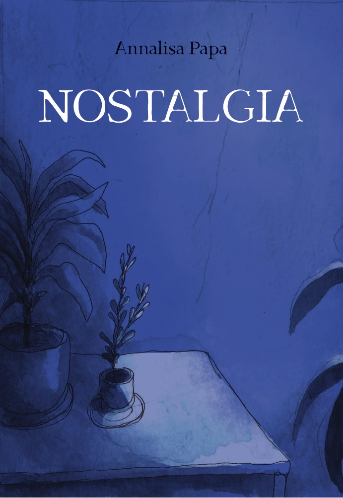

Zines
I am not a prolific maker of finished things.
Displayed with Reader For Electric Zine Maker!

Nostalgia 🇮🇹
A project completed during during uni, about a feeling that used to be very present in my mind and heart.
Watercolors!
It's only available in Italian so far, sorry.